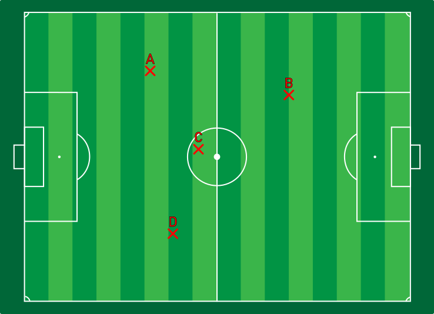
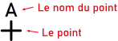
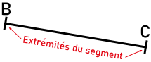
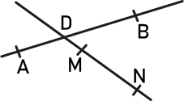

Activité Introduction

- Les points A, B, C et D représentent les positions de quatre élèves sur le terrain de football.
- Un joueur E peut-il être aligné avec B et D ? Si oui, où est-il possible de le placer ? Placer le point E.
- Un joueur F peut-il être aligné avec A et D ainsi qu'avec B et C ? Si oui, placer le joueur. On dit alors que (AD) et (BC) sont _______ en F.
- Placer le joueur G aligné avec A et B ainsi qu'avec C et D.
-
Que signifie les notations suivantes :
- $[MN]$
- $(MN)$
- $(MN]$
- $[MN)$
- $MN$
Vocabulaire :
Points et segments :
En géométrie, un point est représenté par une croix. On peut alors lui donner un nom en utilisant une lettre majuscule en batons.

Remarque :
Sur une figure, deux points distincts (c'est-à-dire qui ne sont pas confondus) ont un nom différents
Un segment est composé de deux points relié entre eux en ligne droite.

Remarque :
- Un segment se note avec des crochet : [BC]
- Les points B et C sont les extrémités du segment
Droite et demi-droite :
Une droite est une ligne illimitée qui se prolonge des deux côtés.
Remarque :
- Une droite se note avec des parenthèses : (MN)
- Une droite a deux directions que l'on définit avec des lettres minuscules.
-
Il existe plusieurs manière de définir une droite.
-
A partir de deux points, on la note (MN).
-
A partir d'un nom, ici $(d)$.
-
A partir de deux directions, ici $(zp)$.
-
A partir d'une direction et d'un point, ici $(wK)$.
- Par deux points distincts passe une unique droite.
- Lorsque trois points se trouvent sur la même droite, on dit qu'ils sont alignés.
Une demi-droite commence d'un point et se prolonge dans une seul direction.
Remarque :
- Une demi-droite se note avec un crochet et une parenthèses : [GH) ou (HG]
- Le point de départ est appelé origine de la demi-droite. Ici c'est G.
- Le crochet "[" représente l'arrêt de la demi-droite et la parenthèse ")" sa continuité.
-
Il existe plusieurs manière de définir une demi-droite.
-
A partir de deux points, on la note $[GH)$.
-
A partir d'un point et d'une direction $[Ts)$.
Points particuliers :
Droite sécante :
Lorsque des droites ; segments ou demi-droites se coupent en un point on dit qu'elles sont sécantes.
Exemple :

Ici les droites $(AB)$ et $(MN)$ sont sécantes en D.
Remarque :
Les points D, M et N sont alignés.
Distance et milieu :
La distance entre deux points est la longueur du plus court chemin entre ces deux points. C'est la longueur du segment qui joint ces deux points.
Exemple :
La distance entre le point A et B est 2,5cm.
On note la longeur : AB = 2,5cm
Le
milieu I d'un segment [RS] est le point tel que :
- I appartient au segment [RS]
- I est à égale distance des points R et S